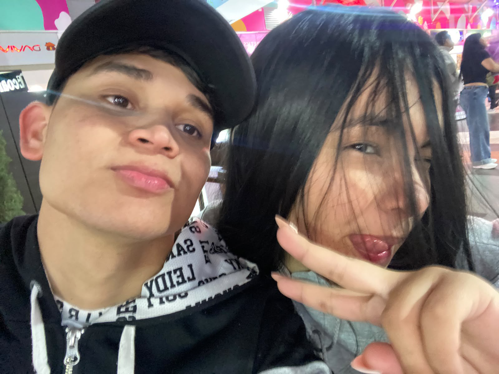
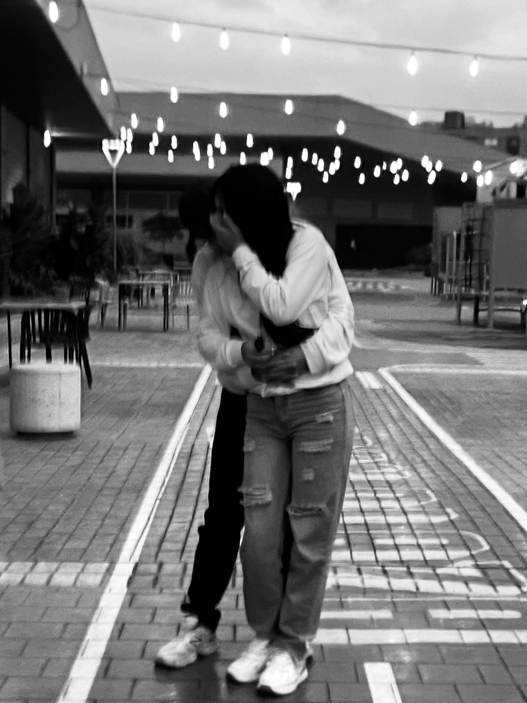
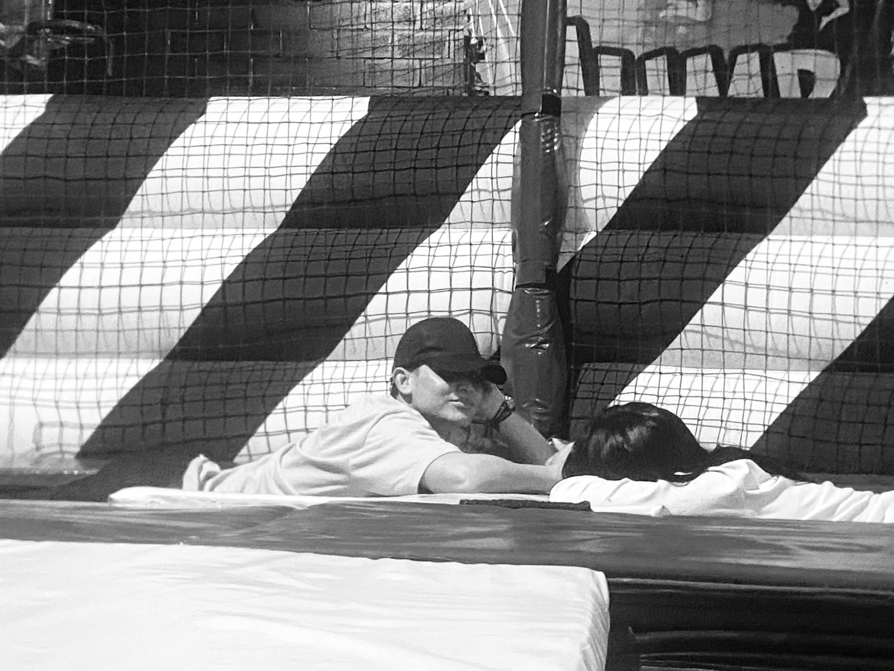
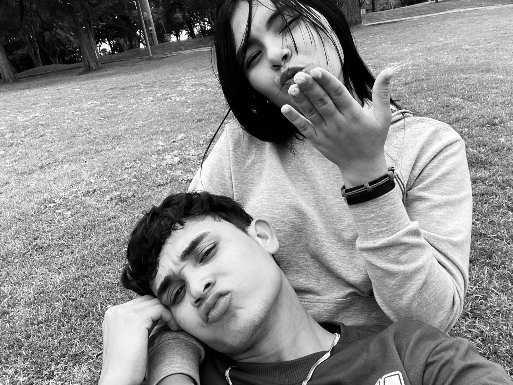

Mi preciosa, el tesoro más grande de este mundo eres tú. Gracias por llenar mi vida de amor.
" ),500); } else { showMessage("💗 ¡Encontraste un corazón! ("+score+"/5) Sigue explorando."); } } }); } function createPortal(x,y,z) { const ring=addMesh( new THREE.TorusGeometry(1.35,.12,12,40), new THREE.MeshStandardMaterial({ color:0xff83d0, emissive:0xff3ca8, emissiveIntensity:1.2 }),x,y,z ); ring.rotation.y=.3; addMesh( new THREE.TorusGeometry(1.05,.045,8,40), new THREE.MeshBasicMaterial({color:0x9deaff}), x,y,z ); objects.push({ mesh:ring,x,z, title:"El portal de nuestros sueños", action:() => openModal( "Si pudiera viajar a cualquier lugar del universo, elegiría uno donde pudiera seguir tomándote de la mano.
"+ "Porque mi lugar favorito no es un sitio: eres tú. ❤️
" ) }); } function createMemoryStone(x,y,z) { const stone=addMesh( new THREE.DodecahedronGeometry(.65,0), makeMaterial(0x9a77cb,{emissive:0x3b1e65,emissiveIntensity:.45}), x,y,z ); addMesh( new THREE.SphereGeometry(.13,12,12), new THREE.MeshBasicMaterial({color:0xffb4df}), x,y+.7,z ); objects.push({ mesh:stone,x,z, title:"Piedra de los recuerdos", action:() => openModal( "Entre millones de personas, qué bonito que la vida nos haya permitido encontrarnos.
"+ "Quiero seguir creando recuerdos contigo, reír a tu lado y acompañarte en los días buenos y en los difíciles.
"+ "Te elegiría una y mil veces. ❤️
" ) }); } function createBench(x,y,z) { const wood=makeMaterial(0x9b526b); addMesh(new THREE.BoxGeometry(2,.18,.55),wood,x,y+.5,z); addMesh(new THREE.BoxGeometry(2,.5,.13),wood,x,y+.8,z-.23); for(const side of [-.75,.75]) { addMesh(new THREE.BoxGeometry(.13,.55,.45),wood,x+side,y+.25,z); } objects.push({ mesh:{position:new THREE.Vector3(x,y,z)},x,z, title:"Nuestro banquito", action:() => openModal( "Imagínanos aquí, viendo las estrellas, hablando de nuestros sueños y riéndonos de cualquier tontería.
"+ "No necesito un lugar perfecto. Solo quiero compartir muchos momentos contigo. ❤️
" ) }); } function setupControls() { window.addEventListener("keydown",e=>{ const key=e.key.toLowerCase(); keys[key]=true; if(["arrowup","arrowdown","arrowleft","arrowright"," "].includes(key)) e.preventDefault(); if(key==="e") interact(); if(key===" " && grounded) { verticalSpeed=7; grounded=false; } }); window.addEventListener("keyup",e=>{ keys[e.key.toLowerCase()]=false; }); renderer.domElement.addEventListener("pointerdown",e=>{ mouseDown=true; lastMouseX=e.clientX; }); window.addEventListener("pointerup",()=>mouseDown=false); window.addEventListener("pointermove",e=>{ if(mouseDown && running) { cameraAngle-=(e.clientX-lastMouseX)*.006; lastMouseX=e.clientX; } }); document.querySelectorAll("[data-key]").forEach(button=>{ const key=button.dataset.key; const on=ev=>{ev.preventDefault();keys[key]=true}; const off=ev=>{ev.preventDefault();keys[key]=false}; button.addEventListener("pointerdown",on); button.addEventListener("pointerup",off); button.addEventListener("pointerleave",off); button.addEventListener("pointercancel",off); }); $("jump").addEventListener("pointerdown",e=>{ e.preventDefault(); if(grounded) { verticalSpeed=7; grounded=false; } }); $("interact").addEventListener("click",interact); $("letter").addEventListener("click",showLetter); $("photos").addEventListener("click",showPhotos); $("music").addEventListener("click",()=>{ window.open( "https://www.youtube.com/results?search_query=Tutu+Camilo+Pedro+Capo", "_blank","noopener" ); }); } function interact() { if(!running) return; if(nearby && nearby.action) { nearby.action(); } else { showMessage("🌸 Explora el jardín y acércate a una flor, corazón u objeto para descubrir una sorpresa."); } } function showLetter() { openModal( "Mi amor, quiero que sepas que eres una persona muy especial para mí. Desde que llegaste a mi vida, has hecho que muchos momentos sean más bonitos.
"+ "Quiero seguir compartiendo contigo risas, sueños, aventuras y hasta esos días en los que simplemente necesitamos un abrazo.
"+ "Este pequeño mundo no es más que una forma de recordarte que mi cariño por ti es enorme.
"+ "Gracias por ser tú, por tus detalles y por los momentos que estamos construyendo juntos.
"+ "Con todo mi amor. 🌹
" ); } function showPhotos() { openModal( "Un lugar para guardar nuestros momentos favoritos.
"+ '
'+ '
'+ '
'+ '
'+ "Lo más bonito de cada foto es la historia que hay detrás. ❤️
" ); } function onResize() { if(!camera || !renderer) return; camera.aspect=window.innerWidth/window.innerHeight; camera.updateProjectionMatrix(); renderer.setSize(window.innerWidth,window.innerHeight); } function animate() { requestAnimationFrame(animate); const dt=Math.min(clock.getDelta(),.05); worldTime+=dt; // Movimiento del personaje if(running && player) { let forward=0,side=0; if(keys.w || keys.arrowup) forward+=1; if(keys.s || keys.arrowdown) forward-=1; if(keys.a || keys.arrowleft) side-=1; if(keys.d || keys.arrowright) side+=1; const moving=forward!==0 || side!==0; if(moving) { const length=Math.hypot(forward,side); forward/=length; side/=length; const angle=cameraAngle; const dx=side*Math.cos(angle)+forward*Math.sin(angle); const dz=-forward*Math.cos(angle)+side*Math.sin(angle); player.position.x+=dx*5*dt; player.position.z+=dz*5*dt; player.rotation.y=Math.atan2(dx,dz); playerParts.legs.forEach((part,i)=>{ part.mesh.rotation.x=Math.sin(worldTime*11+i*Math.PI)*.65; }); playerParts.arms.forEach((part,i)=>{ part.mesh.rotation.x=Math.sin(worldTime*11+i*Math.PI+Math.PI)*.45; }); } else { playerParts.legs.forEach(part=>part.mesh.rotation.x=0); playerParts.arms.forEach(part=>part.mesh.rotation.x=0); } // Mantener al personaje dentro de la isla const dist=Math.hypot(player.position.x,player.position.z); if(dist>16) { player.position.x*=16/dist; player.position.z*=16/dist; } // Salto if(!grounded) { player.position.y+=verticalSpeed*dt; verticalSpeed-=18*dt; if(player.position.y<=.25) { player.position.y=.25; verticalSpeed=0; grounded=true; } } // Cámara de tercera persona const distance=7; const targetX=player.position.x-Math.sin(cameraAngle)*distance; const targetZ=player.position.z-Math.cos(cameraAngle)*distance; camera.position.x+=(targetX-camera.position.x)*Math.min(1,dt*5); camera.position.y+=(player.position.y+cameraHeight-camera.position.y)*Math.min(1,dt*5); camera.position.z+=(targetZ-camera.position.z)*Math.min(1,dt*5); camera.lookAt(player.position.x,player.position.y+1.1,player.position.z); // Buscar objeto cercano nearby=null; let best=2.5; for(const obj of objects) { if(!obj.mesh || obj.mesh.visible===false) continue; const dx=player.position.x-obj.x; const dz=player.position.z-obj.z; const d=Math.hypot(dx,dz); if(d